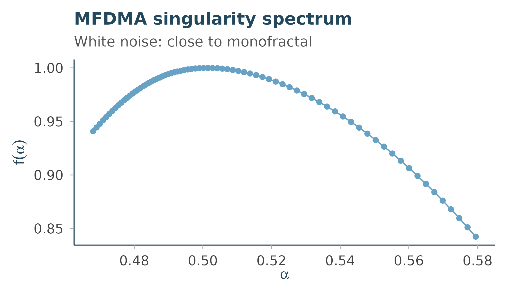

Overview
Rtractor is the complexity/statistical-physics layer
of the Circadia Lab R ecosystem: a shared home for the nonlinear
dynamics and complex-systems measures (entropy, fractal dimension,
multifractal spectra, recurrence quantification) that would otherwise
get reimplemented piecemeal inside signal-specific packages like
mrpheus, zeitR, and dynR.
Like the rest of the ecosystem, Rtractor is signal-agnostic: every function accepts a plain numeric vector regardless of where it came from – EEG, actigraphy, BOLD, HRV, or anything else – rather than assuming a specific acquisition modality or staging scheme.
Where a solid reference implementation exists, Rtractor wraps it (via
Rcpp) rather than re-deriving the algorithm from scratch, to preserve
numerical parity with the original methods literature. Where no license
permits a direct wrap, functions are clean-room reimplementations from
the published algorithm, validated against the reference implementation
on synthetic test data. See inst/COPYRIGHTS for the full
provenance of every function.
This article walks through everything currently implemented, organised by family. See “What isn’t here yet” at the end for what’s still in progress.
Example data
A couple of synthetic series to work with throughout: white noise (an uncorrelated signal, the classic complexity-measures benchmark) and a random walk (its cumulative sum, the other classic benchmark).
Fractal & multifractal analysis
Detrended Fluctuation Analysis
dfa() estimates the scaling exponent alpha of a time
series (Peng et al. 1994). By default it treats x as an
increment series and integrates it internally – the standard DFA
convention – so white noise gives the textbook benchmark of alpha ~
0.5:
dfa(white_noise)$alpha
#> [1] 0.4773237Feeding a random walk through the same default pipeline amounts to double integration – the other classic benchmark, alpha ~ 1.5:
dfa(random_walk)$alpha
#> [1] 1.473855Higuchi Fractal Dimension
higuchi_fd() estimates fractal dimension from curve
length at increasing sub-sampling intervals (Higuchi 1988). White noise
is space-filling (HFD ~ 2); a smooth periodic signal is line-like (HFD ~
1):
higuchi_fd(white_noise, k_max = 10)$hfd
#> [1] 2.000681
smooth_signal <- sin(seq(0, 40 * pi, length.out = 4000))
higuchi_fd(smooth_signal, k_max = 10)$hfd
#> [1] 1.002216Multifractal Detrending Moving Average (MFDMA)
mfdma() extends DFA to a spectrum of scaling exponents
across multifractal orders q (Gu & Zhou 2010),
returning the singularity spectrum f(alpha):
mf <- mfdma(white_noise, n_min = 10, n_max = 400, n_scales = 20)
plot(mf$alpha, mf$f, type = "b", xlab = "alpha", ylab = "f(alpha)")White noise is close to monofractal, so the spectrum collapses to a narrow range around alpha ~ 0.5 with f(alpha) peaking near 1.
Chhabra-Jensen multifractal spectrum
chhabra_jensen() estimates the same kind of spectrum via
direct box-counting (Chhabra & Jensen 1989) rather than detrended
fluctuations. It needs a strictly positive series with a dyadic
(power-of-two-friendly) length:
positive_series <- abs(rnorm(1024)) + 0.01
cj <- chhabra_jensen(positive_series, scales = 1:6)
plot(cj$alpha, cj$falpha, type = "b", xlab = "alpha", ylab = "f(alpha)")Each q value’s
alpha/falpha/Dq estimate comes
with an R-squared (r_squared_alpha,
r_squared_falpha, r_squared_Dq) – worth
checking before trusting any individual point, especially near the edges
of the q range.
Nonlinear time-domain features
Three fast, cheap-to-compute descriptors centralised from
mrpheus’s AASM staging feature pipeline (itself a validated
port of the antropy/YASA Python feature set):
petrosian_fd(white_noise)
#> [1] 1.02932
hjorth_parameters(white_noise)
#> $mobility
#> [1] 1.407727
#>
#> $complexity
#> [1] 1.226695
num_zerocross(white_noise)
#> [1] 1958petrosian_fd() is a fast proxy for irregularity based on
sign changes in the first difference. hjorth_parameters()
returns mobility (a proxy for mean frequency) and complexity (a proxy
for bandwidth) from variance ratios of successive differences – note
this uses Bessel-corrected variance, matching R’s var()
convention, which differs slightly from antropy’s
population-variance convention for short series (see
?hjorth_parameters). num_zerocross() simply
counts sign changes.
Entropy
perm_entropy() estimates complexity from the
distribution of ordinal patterns in the series (Bandt & Pompe 2002),
normalised to [0, 1] by default:
perm_entropy(white_noise)
#> [1] 0.9996287
perm_entropy(smooth_signal)
#> [1] 0.4219911White noise has near-maximal permutation entropy (every ordinal pattern is close to equally likely); the smooth periodic signal has much lower entropy (a small number of patterns dominate).
Recurrence quantification analysis (RQA)
recurrence_microstate_entropy() implements a
parameter-free approach to recurrence analysis (Corso et al. 2018):
rather than picking a vicinity threshold epsilon by hand, it searches
for the threshold that maximises the Shannon entropy of the
recurrence microstate distribution.
windowed_signal <- (sin(seq(0, 20 * pi, length.out = 300)) + 1) / 2
recurrence_microstate_entropy(windowed_signal, seed = 1)
#> $microstate_probs
#> [1] 5.048889e-01 1.544444e-02 0.000000e+00 1.611111e-03 1.688889e-02
#> [6] 5.555556e-05 2.055556e-03 4.555556e-03 0.000000e+00 2.000000e-03
#> [11] 0.000000e+00 9.388889e-03 0.000000e+00 0.000000e+00 0.000000e+00
#> [16] 4.000000e-03 0.000000e+00 0.000000e+00 0.000000e+00 0.000000e+00
#> [21] 0.000000e+00 0.000000e+00 0.000000e+00 0.000000e+00 0.000000e+00
#> [26] 0.000000e+00 0.000000e+00 0.000000e+00 0.000000e+00 0.000000e+00
#> [31] 0.000000e+00 2.666667e-03 0.000000e+00 0.000000e+00 0.000000e+00
#> [36] 0.000000e+00 2.500000e-03 0.000000e+00 1.050000e-02 4.388889e-03
#> [41] 0.000000e+00 0.000000e+00 0.000000e+00 0.000000e+00 0.000000e+00
#> [46] 0.000000e+00 0.000000e+00 2.222222e-04 0.000000e+00 0.000000e+00
#> [51] 0.000000e+00 0.000000e+00 0.000000e+00 0.000000e+00 0.000000e+00
#> [56] 2.666667e-03 0.000000e+00 0.000000e+00 0.000000e+00 0.000000e+00
#> [61] 0.000000e+00 0.000000e+00 0.000000e+00 3.444444e-03 1.627778e-02
#> [66] 2.222222e-04 0.000000e+00 0.000000e+00 0.000000e+00 0.000000e+00
#> [71] 0.000000e+00 0.000000e+00 2.388889e-03 4.166667e-03 0.000000e+00
#> [76] 4.722222e-03 0.000000e+00 0.000000e+00 0.000000e+00 0.000000e+00
#> [81] 0.000000e+00 0.000000e+00 0.000000e+00 0.000000e+00 0.000000e+00
#> [86] 0.000000e+00 0.000000e+00 0.000000e+00 0.000000e+00 0.000000e+00
#> [91] 0.000000e+00 2.166667e-03 0.000000e+00 0.000000e+00 0.000000e+00
#> [96] 1.177778e-02 0.000000e+00 0.000000e+00 0.000000e+00 0.000000e+00
#> [101] 0.000000e+00 0.000000e+00 0.000000e+00 0.000000e+00 0.000000e+00
#> [106] 0.000000e+00 0.000000e+00 0.000000e+00 0.000000e+00 0.000000e+00
#> [111] 0.000000e+00 0.000000e+00 0.000000e+00 0.000000e+00 0.000000e+00
#> [116] 0.000000e+00 0.000000e+00 0.000000e+00 0.000000e+00 0.000000e+00
#> [121] 0.000000e+00 0.000000e+00 0.000000e+00 0.000000e+00 0.000000e+00
#> [126] 0.000000e+00 0.000000e+00 4.055556e-03 0.000000e+00 0.000000e+00
#> [131] 0.000000e+00 0.000000e+00 0.000000e+00 0.000000e+00 0.000000e+00
#> [136] 0.000000e+00 0.000000e+00 0.000000e+00 0.000000e+00 0.000000e+00
#> [141] 0.000000e+00 0.000000e+00 0.000000e+00 0.000000e+00 0.000000e+00
#> [146] 0.000000e+00 0.000000e+00 0.000000e+00 0.000000e+00 0.000000e+00
#> [151] 0.000000e+00 0.000000e+00 0.000000e+00 0.000000e+00 0.000000e+00
#> [156] 0.000000e+00 0.000000e+00 0.000000e+00 0.000000e+00 0.000000e+00
#> [161] 0.000000e+00 0.000000e+00 0.000000e+00 0.000000e+00 0.000000e+00
#> [166] 0.000000e+00 0.000000e+00 0.000000e+00 0.000000e+00 0.000000e+00
#> [171] 0.000000e+00 0.000000e+00 0.000000e+00 0.000000e+00 0.000000e+00
#> [176] 0.000000e+00 0.000000e+00 0.000000e+00 0.000000e+00 0.000000e+00
#> [181] 0.000000e+00 0.000000e+00 0.000000e+00 0.000000e+00 0.000000e+00
#> [186] 0.000000e+00 0.000000e+00 0.000000e+00 0.000000e+00 0.000000e+00
#> [191] 0.000000e+00 0.000000e+00 2.555556e-03 0.000000e+00 0.000000e+00
#> [196] 0.000000e+00 0.000000e+00 0.000000e+00 0.000000e+00 0.000000e+00
#> [201] 8.833333e-03 3.833333e-03 0.000000e+00 1.666667e-04 0.000000e+00
#> [206] 0.000000e+00 0.000000e+00 0.000000e+00 0.000000e+00 0.000000e+00
#> [211] 0.000000e+00 0.000000e+00 0.000000e+00 0.000000e+00 0.000000e+00
#> [216] 0.000000e+00 0.000000e+00 2.888889e-03 0.000000e+00 3.944444e-03
#> [221] 0.000000e+00 0.000000e+00 0.000000e+00 4.611111e-03 0.000000e+00
#> [226] 0.000000e+00 0.000000e+00 0.000000e+00 0.000000e+00 0.000000e+00
#> [231] 0.000000e+00 0.000000e+00 0.000000e+00 0.000000e+00 0.000000e+00
#> [236] 0.000000e+00 0.000000e+00 0.000000e+00 0.000000e+00 0.000000e+00
#> [241] 0.000000e+00 0.000000e+00 0.000000e+00 0.000000e+00 0.000000e+00
#> [246] 0.000000e+00 0.000000e+00 0.000000e+00 0.000000e+00 0.000000e+00
#> [251] 0.000000e+00 0.000000e+00 0.000000e+00 0.000000e+00 1.000000e-03
#> [256] 1.694444e-02 1.661111e-02 0.000000e+00 0.000000e+00 0.000000e+00
#> [261] 1.111111e-04 0.000000e+00 0.000000e+00 0.000000e+00 0.000000e+00
#> [266] 0.000000e+00 0.000000e+00 0.000000e+00 0.000000e+00 0.000000e+00
#> [271] 0.000000e+00 0.000000e+00 0.000000e+00 0.000000e+00 0.000000e+00
#> [276] 0.000000e+00 0.000000e+00 0.000000e+00 0.000000e+00 0.000000e+00
#> [281] 0.000000e+00 0.000000e+00 0.000000e+00 0.000000e+00 0.000000e+00
#> [286] 0.000000e+00 0.000000e+00 0.000000e+00 2.944444e-03 0.000000e+00
#> [291] 0.000000e+00 0.000000e+00 4.944444e-03 0.000000e+00 4.388889e-03
#> [296] 1.666667e-04 0.000000e+00 0.000000e+00 0.000000e+00 0.000000e+00
#> [301] 0.000000e+00 0.000000e+00 0.000000e+00 0.000000e+00 0.000000e+00
#> [306] 0.000000e+00 0.000000e+00 0.000000e+00 0.000000e+00 0.000000e+00
#> [311] 2.833333e-03 1.088889e-02 0.000000e+00 0.000000e+00 0.000000e+00
#> [316] 0.000000e+00 0.000000e+00 0.000000e+00 0.000000e+00 4.166667e-03
#> [321] 5.555556e-05 0.000000e+00 0.000000e+00 0.000000e+00 0.000000e+00
#> [326] 0.000000e+00 0.000000e+00 0.000000e+00 0.000000e+00 0.000000e+00
#> [331] 0.000000e+00 0.000000e+00 0.000000e+00 0.000000e+00 0.000000e+00
#> [336] 0.000000e+00 0.000000e+00 0.000000e+00 0.000000e+00 0.000000e+00
#> [341] 0.000000e+00 0.000000e+00 0.000000e+00 0.000000e+00 0.000000e+00
#> [346] 0.000000e+00 0.000000e+00 0.000000e+00 0.000000e+00 0.000000e+00
#> [351] 0.000000e+00 0.000000e+00 0.000000e+00 0.000000e+00 0.000000e+00
#> [356] 0.000000e+00 0.000000e+00 0.000000e+00 0.000000e+00 0.000000e+00
#> [361] 0.000000e+00 0.000000e+00 0.000000e+00 0.000000e+00 0.000000e+00
#> [366] 0.000000e+00 0.000000e+00 0.000000e+00 0.000000e+00 0.000000e+00
#> [371] 0.000000e+00 0.000000e+00 0.000000e+00 0.000000e+00 0.000000e+00
#> [376] 0.000000e+00 0.000000e+00 0.000000e+00 0.000000e+00 0.000000e+00
#> [381] 0.000000e+00 0.000000e+00 0.000000e+00 1.666667e-04 2.500000e-03
#> [386] 0.000000e+00 0.000000e+00 0.000000e+00 0.000000e+00 0.000000e+00
#> [391] 0.000000e+00 0.000000e+00 0.000000e+00 0.000000e+00 0.000000e+00
#> [396] 0.000000e+00 0.000000e+00 0.000000e+00 0.000000e+00 0.000000e+00
#> [401] 0.000000e+00 0.000000e+00 0.000000e+00 0.000000e+00 0.000000e+00
#> [406] 0.000000e+00 0.000000e+00 0.000000e+00 0.000000e+00 0.000000e+00
#> [411] 0.000000e+00 0.000000e+00 0.000000e+00 0.000000e+00 0.000000e+00
#> [416] 0.000000e+00 9.111111e-03 0.000000e+00 0.000000e+00 0.000000e+00
#> [421] 4.722222e-03 0.000000e+00 1.111111e-04 0.000000e+00 0.000000e+00
#> [426] 0.000000e+00 0.000000e+00 0.000000e+00 0.000000e+00 0.000000e+00
#> [431] 0.000000e+00 0.000000e+00 0.000000e+00 0.000000e+00 0.000000e+00
#> [436] 0.000000e+00 2.833333e-03 0.000000e+00 4.666667e-03 5.111111e-03
#> [441] 0.000000e+00 0.000000e+00 0.000000e+00 1.222222e-03 0.000000e+00
#> [446] 0.000000e+00 0.000000e+00 1.916667e-02 4.555556e-03 0.000000e+00
#> [451] 0.000000e+00 0.000000e+00 0.000000e+00 0.000000e+00 0.000000e+00
#> [456] 0.000000e+00 4.166667e-03 3.888889e-04 0.000000e+00 0.000000e+00
#> [461] 0.000000e+00 0.000000e+00 0.000000e+00 0.000000e+00 0.000000e+00
#> [466] 0.000000e+00 0.000000e+00 0.000000e+00 0.000000e+00 0.000000e+00
#> [471] 0.000000e+00 0.000000e+00 2.500000e-03 1.150000e-02 0.000000e+00
#> [476] 4.888889e-03 0.000000e+00 0.000000e+00 0.000000e+00 2.222222e-04
#> [481] 4.388889e-03 0.000000e+00 0.000000e+00 0.000000e+00 0.000000e+00
#> [486] 0.000000e+00 0.000000e+00 0.000000e+00 2.222222e-04 0.000000e+00
#> [491] 0.000000e+00 0.000000e+00 0.000000e+00 0.000000e+00 0.000000e+00
#> [496] 0.000000e+00 2.944444e-03 0.000000e+00 0.000000e+00 0.000000e+00
#> [501] 1.183333e-02 0.000000e+00 4.888889e-03 1.666667e-04 4.277778e-03
#> [506] 4.888889e-03 0.000000e+00 1.800000e-02 4.388889e-03 1.666667e-04
#> [511] 1.783333e-02 1.232222e-01
#>
#> $entropy_max
#> [1] 2.392682
#>
#> $eps_max
#> [1] 0.19624Colour palette & theme
Rtractor ships its own colour palette and ggplot2 theme,
visually distinct from circadia’s (softer, more pastel) so
figures from each package are recognisable at a glance:
rtractor_palette()
#> coral cream sage steel_blue ink
#> "#FFB6A6" "#FFEBD3" "#9BCEC1" "#67A2C5" "#23475C"
rtractor_palette("core")
#> coral cream sage steel_blue
#> "#FFB6A6" "#FFEBD3" "#9BCEC1" "#67A2C5"
library(ggplot2)
mf_df <- data.frame(alpha = mf$alpha, f = mf$f)
ggplot(mf_df, aes(alpha, f)) +
geom_point(colour = rtractor_palette("core")[["steel_blue"]], size = 2) +
geom_line(colour = rtractor_palette("core")[["steel_blue"]]) +
labs(
title = "MFDMA singularity spectrum",
subtitle = "White noise: close to monofractal",
x = expression(alpha), y = expression(f(alpha))
) +
theme_rtractor()
What isn’t here yet
Several planned families aren’t implemented yet:
-
Lyapunov exponents (
R/lyapunov.R) – Rosenstein and Wolf methods for the largest Lyapunov exponent. -
Multiscale metrics (
R/multiscale.R) – multiscale entropy and refined composite multiscale entropy, built on the entropy family applied at each coarse-grained scale. -
General RQA measures (
R/rqa.R) – the recurrence matrix itself and its derived quantifiers (determinism, laminarity, recurrence rate, trapping time).recurrence_microstate_entropy()is a threshold-selection tool, not a replacement for these. -
Phase-space embedding (
R/embed.R) – time-delay embedding, and delay/dimension estimation, needed by the Lyapunov and RQA families above.
See NEWS.md for progress, or the package’s GitHub
repository for the current status of reference code for each.